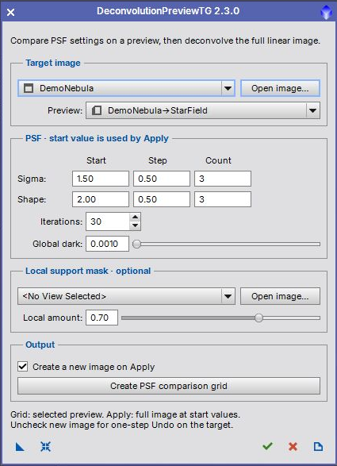

Version 2.3.0. Compare synthetic PSF settings on a preview and apply deconvolution to a full linear image. [more]
Keywords: deconvolution, PSF, Richardson-Lucy, preview
[hide]
[hide]
DeconvolutionPreviewTG helps compare parametric point spread functions before processing a full image. The compact interface can open without an image. Select an existing image or use Open image when ready; Apply keeps the dialog open for further trials.

The processing uses regularized Richardson-Lucy deconvolution. RGB images are processed through their luminance. Use linear data, before a permanent histogram stretch. A screen stretch is only a display aid and does not make the image nonlinear.
[hide]
[hide]
Sigma: Start, Step, Count
Sigma controls the width of the synthetic PSF. Grid columns use Start plus column index times Step. Count is 1–10. Apply uses Start alone.
Shape: Start, Step, Count
Shape controls the parametric PSF profile. Grid rows use Start plus row index times Step. Count is 1–10. Apply uses Start alone. The last sigma and shape in a grid must each be at most 10.
Iterations
Number of Richardson-Lucy iterations for every grid cell or full-image application; default 30. More iterations take longer and can reveal noise or ringing.
Global dark
Global dark deringing amount; default 0.0010. Evaluate star edges and background artifacts when adjusting it.
Local support mask
Optional separate grayscale image registered to the target. Grid processing crops a temporary copy to the selected preview. Existing mask previews are preserved.
Local amount
Strength of local deringing support; default 0.70. Used only when a support mask is selected.
[hide]
Create PSF comparison grid always creates a separate image and leaves the target unchanged. Its automatic screen stretch is for viewing. Grid labels and separators are not scientific image data.
Apply processes the full target at the Start settings. Create a new image on Apply is enabled by default. Disable it to update the original with one Undo step. Existing image masks are not used as additional processing masks. The chosen local support mask is passed explicitly to Deconvolution.
Repeated Apply starts from the currently selected target. New output images receive unique names. Temporary processing images are closed on success, error or cancellation. Full-image copies retain sample precision, alpha channels, FITS keywords, RGB working space and the source screen stretch. Other metadata, including astrometric solutions, is not copied.
[hide]
New Instance
Drag the triangle to the workspace to save processing settings and the support-mask reference. Apply an instance to a main image for full-image deconvolution, or to a preview for a comparison grid. The referenced support mask must still be open.
Reset
Restore default settings while retaining selected images and preview.
Apply
Process the full target without closing the interface.
Close
Close the interface. During processing, request cancellation; it takes effect between native processing steps.
Documentation
Open this guide.
Old instances containing a preview reference can still restore that selection if it exists. New instances select their target from the receiving image or preview.
[hide]
Compact 420-pixel layout; open-first workflow; separate comparison and full-image actions; repeatable Apply; source-preserving outputs; bounded instance parameters; safe temporary crops and graphics cleanup; updated PiDoc guide.
Copyright © 2009 Juan M. Gómez; 2022–2026 Thorsten Glebe